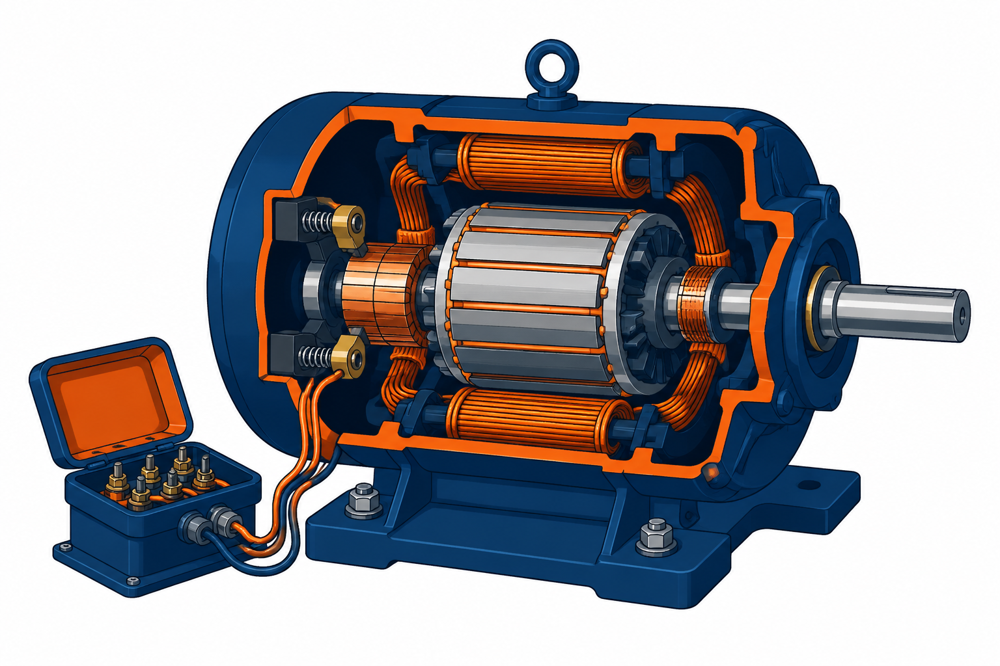

他励直流电动机（剖面）

① 定输入输出
\text{输入：电枢电压} u_{a}\text{（给定）、负载转矩} m_{c}\text{（扰动）；输出：转速} n
② 电枢回路电压方程
L_{a}\dfrac{di_{a}}{dt} + i_{a}R_{a} + e_{a} = u_{a}
② 机电关系
e_{a} = C_{e}\cdot n\text{，} m = C_{m}\cdot i_{a}\text{，} J\dfrac{dn}{dt} = m - m_{c}
③ 消元标准化：
T_{a}T_{m}\dfrac{d^{2}n}{dt^{2}} + T_{m}\dfrac{dn}{dt} + n = K_{u}\cdot u_{a} - K_{m}(T_{a}\dfrac{dm_{c}}{dt} + m_{c})
其中
T_{a} = L_{a}/R_{a}
、
T_{m} = JR_{a}/(C_{e}C_{m})
为时间常数，
K_{u} = 1/C_{e}
、
K_{m} = T_{m}/J
为传递系数